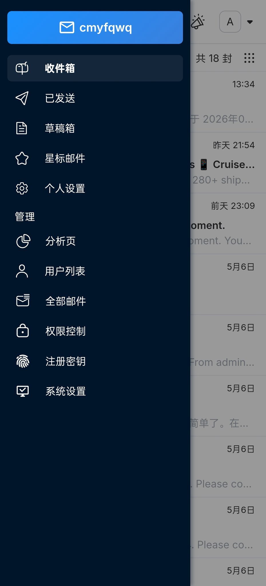
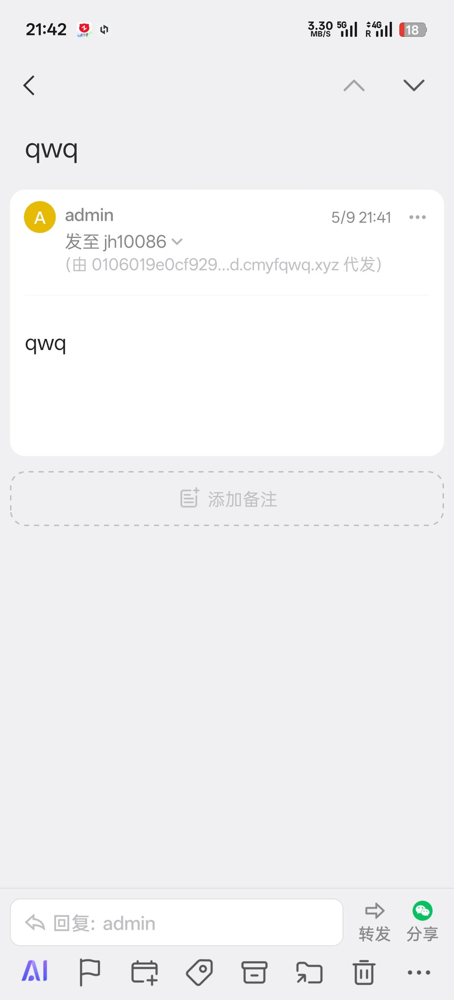

たたなこ
@tatanakots
@cmyf_qwq 我用的是mailu，因为搭建基础设施的时候cf还没有发件服务
并且运营公共邮件服务平台也需要有至少一个自己完全控制的邮件出口比较好
于是多方因素综合之下我决定自己搭建基础设施，这一设施的复用率还挺高的，已经成为多个服务的依赖项了，并且发再多邮件也不会有额外成本，还挺不错的


朝梦引帆🍥
@cmyf_qwq
@tatanakots 我用的是cloud-mail 这个项目自己搭建了一个邮箱玩 https://t.co/0yYtAV4WYw